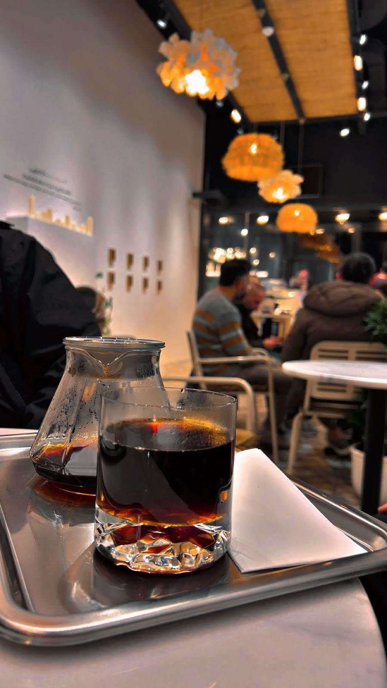

Kahvenin klasiği.
- Espresso
- Flat White
- V60
- Chemex
NUN COFFEE / KAYABAŞI
Espresso’dan V60’a, Chemex’ten soğuk demlemeye.
Kahveye ayırdığınız zaman, Nun’da.

NUN’DA BİR MOLA
Kayabaşı’nda kahveye uğrayın.
Günün akışına küçük bir ara verin.
GOOGLE YORUMLARI
“Harika bir cafe.”
Abdurrahman K
Google yorumunu aç ↗“Nun kafe’yi tanıdıkdan sonra kahveye olan sevgim arttı nitelikli kahveleri burda tanıdım chemex harika tek kelimeyle mutlaka deneyin derim”
Nurullah Toprak
Google yorumunu aç ↗Google yorumlarından kısa alıntılar. Puan ve yorum sayısı kontrol tarihindeki kaydı yansıtır.
Her gün 09.00–00.00
0536 474 97 67@nuncoffeetr ↗Ziyaret öncesi güncel saatleri işletmeden kontrol edebilirsiniz.